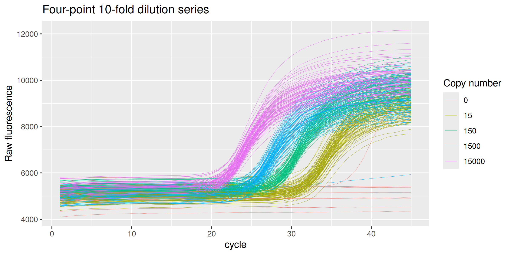
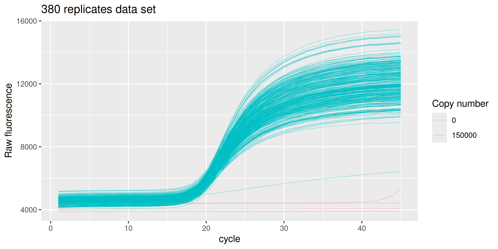
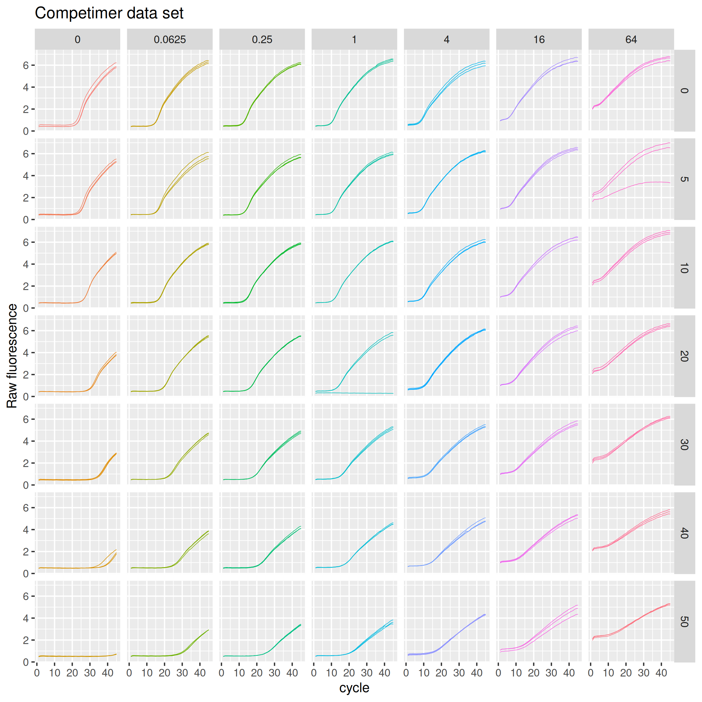

ruijter is an R data package that provides the real-time qPCR technical data sets used in Ruijter et al. (2013) in tidy format, namely:
- The 94-replicates-4-dilutions data set:
ds_94_4 - The 380 replicates data set:
ds_380 - The competimer data set:
ds_competimer
Installation
Install ruijter from CRAN:
# Install from CRAN
install.packages("ruijter")You can install the development version of ruijter like so:
# install.packages("remotes")
remotes::install_github("ramiromagno/ruijter")Usage
Four-point 10-fold dilution series ds_94_4
library(ruijter)
library(dplyr)
#>
#> Attaching package: 'dplyr'
#> The following objects are masked from 'package:stats':
#>
#> filter, lag
#> The following objects are masked from 'package:base':
#>
#> intersect, setdiff, setequal, union
library(ggplot2)
head(ds_94_4)
#> # A tibble: 6 × 9
#> well replicate dye target sample_type copies dilution cycle fluor
#> <fct> <fct> <fct> <fct> <fct> <int> <dbl> <int> <dbl>
#> 1 A1 1 SYBR MYCN ntc 0 Inf 1 5202.
#> 2 A1 1 SYBR MYCN ntc 0 Inf 2 5229.
#> 3 A1 1 SYBR MYCN ntc 0 Inf 3 5252.
#> 4 A1 1 SYBR MYCN ntc 0 Inf 4 5256.
#> 5 A1 1 SYBR MYCN ntc 0 Inf 5 5270.
#> 6 A1 1 SYBR MYCN ntc 0 Inf 6 5282.
dplyr::count(ds_94_4, well, replicate, sample_type, copies)
#> # A tibble: 384 × 5
#> well replicate sample_type copies n
#> <fct> <fct> <fct> <int> <int>
#> 1 A1 1 ntc 0 45
#> 2 A2 2 ntc 0 45
#> 3 A3 1 std 15000 45
#> 4 A4 1 std 150 45
#> 5 A5 2 std 15000 45
#> 6 A6 2 std 150 45
#> 7 A7 3 std 15000 45
#> 8 A8 3 std 150 45
#> 9 A9 4 std 15000 45
#> 10 A10 4 std 150 45
#> # ℹ 374 more rows
ds_94_4 %>%
ggplot(mapping = aes(x = cycle, y = fluor, group = well, col = as.character(copies))) +
geom_line(size = 0.1) +
labs(y = "Raw fluorescence", colour="Copy number", title = "Four-point 10-fold dilution series") +
guides(color = guide_legend(override.aes = list(size = 0.5)))
#> Warning: Using `size` aesthetic for lines was deprecated in ggplot2 3.4.0.
#> ℹ Please use `linewidth` instead.
#> This warning is displayed once every 8 hours.
#> Call `lifecycle::last_lifecycle_warnings()` to see where this warning was
#> generated.
Replicates for assessment of precision ds_380
head(ds_380)
#> # A tibble: 6 × 9
#> well replicate dye target sample_type copies dilution cycle fluor
#> <fct> <fct> <fct> <fct> <fct> <int> <dbl> <int> <dbl>
#> 1 A1 1 SYBR MYCN std 150000 1 1 4340.
#> 2 A1 1 SYBR MYCN std 150000 1 2 4365.
#> 3 A1 1 SYBR MYCN std 150000 1 3 4381.
#> 4 A1 1 SYBR MYCN std 150000 1 4 4386.
#> 5 A1 1 SYBR MYCN std 150000 1 5 4398.
#> 6 A1 1 SYBR MYCN std 150000 1 6 4400.
dplyr::count(ds_380, well, replicate, sample_type, copies)
#> # A tibble: 384 × 5
#> well replicate sample_type copies n
#> <fct> <fct> <fct> <int> <int>
#> 1 A1 1 std 150000 45
#> 2 A2 2 std 150000 45
#> 3 A3 3 std 150000 45
#> 4 A4 4 std 150000 45
#> 5 A5 5 std 150000 45
#> 6 A6 6 std 150000 45
#> 7 A7 7 std 150000 45
#> 8 A8 8 std 150000 45
#> 9 A9 9 std 150000 45
#> 10 A10 10 std 150000 45
#> # ℹ 374 more rows
ds_380 %>%
ggplot(mapping = aes(x = cycle, y = fluor, group = well, col = as.factor(copies))) +
geom_line(size = 0.1) +
labs(y = "Raw fluorescence", colour="Copy number", title = "380 replicates data set") +
guides(color = guide_legend(override.aes = list(size = 0.5)))
Competimer primers for PCR efficiency modulation ds_competimer
head(ds_competimer)
#> # A tibble: 6 × 10
#> well replicate dye pct conc target sample_type dilution cycle fluor
#> <fct> <fct> <fct> <dbl> <dbl> <fct> <fct> <dbl> <int> <dbl>
#> 1 <NA> 1 SYBR 0 64 AluSx std 1 1 2.02
#> 2 <NA> 1 SYBR 0 64 AluSx std 1 2 2.30
#> 3 <NA> 1 SYBR 0 64 AluSx std 1 3 2.32
#> 4 <NA> 1 SYBR 0 64 AluSx std 1 4 2.36
#> 5 <NA> 1 SYBR 0 64 AluSx std 1 5 2.42
#> 6 <NA> 1 SYBR 0 64 AluSx std 1 6 2.55
dplyr::count(ds_competimer, well, pct, conc, replicate, sample_type)
#> # A tibble: 147 × 6
#> well pct conc replicate sample_type n
#> <fct> <dbl> <dbl> <fct> <fct> <int>
#> 1 <NA> 0 0 1 ntc 45
#> 2 <NA> 0 0 2 ntc 45
#> 3 <NA> 0 0 3 ntc 45
#> 4 <NA> 0 0.0625 1 std 45
#> 5 <NA> 0 0.0625 2 std 45
#> 6 <NA> 0 0.0625 3 std 45
#> 7 <NA> 0 0.25 1 std 45
#> 8 <NA> 0 0.25 2 std 45
#> 9 <NA> 0 0.25 3 std 45
#> 10 <NA> 0 1 1 std 45
#> # ℹ 137 more rows
ds_competimer %>%
ggplot(mapping = aes(x = cycle, y = fluor, group = interaction(pct, conc, replicate), col = interaction(pct, conc))) +
geom_line(size = 0.2) +
guides(color = "none") +
labs(y = "Raw fluorescence", title = "Competimer data set") +
facet_grid(rows = vars(pct), cols = vars(conc))
Terms of use
If you use the data here provided please do not forget to cite the original work by Ruijter et al. (2013), and this package.
Code of Conduct
Please note that the ruijter project is released with a Contributor Code of Conduct. By contributing to this project, you agree to abide by its terms.
References
Jan M. Ruijter, Michael W. Pfaffl, Sheng Zhao, Andrej N. Spiess, Gregory Boggy, Jochen Blom,Robert G. Rutledge, Davide Sisti, Antoon Lievens, Katleen De Preter, Stefaan Derveaux, Jan Hellemans, Jo Vandesompele. Evaluation of qPCR curve analysis methods for reliable biomarker discovery: Bias, resolution, precision, and implications. Methods 59 32–46 (2013). doi: 10.1016/j.ymeth.2012.08.011.